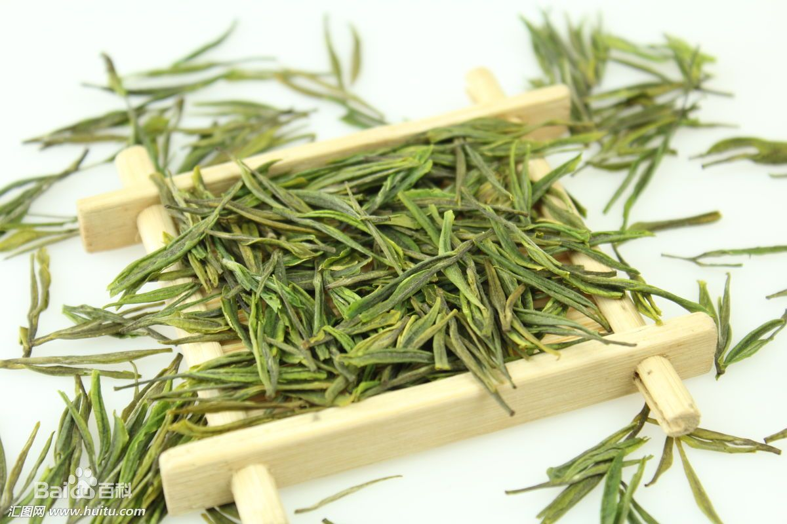
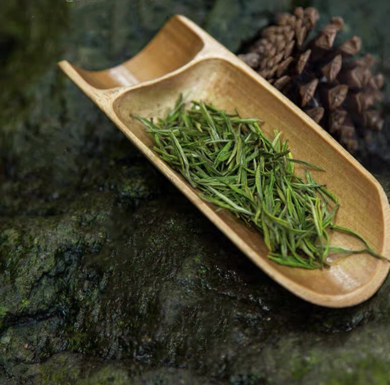
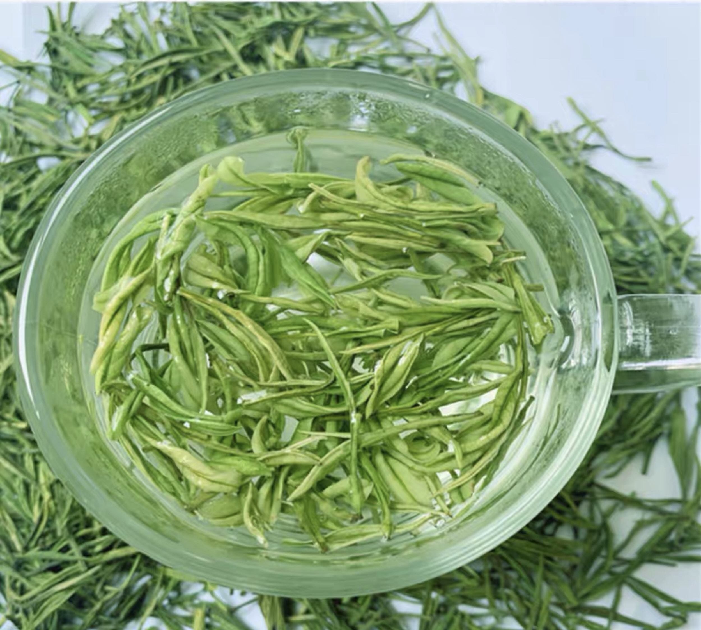

安吉白茶 是浙江省湖州市安吉县特产，国家地理标志产品。安吉白茶外形挺直略扁，形如兰蕙；色泽翠绿，白毫显露；叶芽如金镶碧鞘，内裹银箭，十分可人。冲泡后，清香高扬且持久。滋味鲜爽，饮毕，唇齿留香，回味甘而生津。叶底嫩绿明亮，芽叶朵朵可辨。
1

安吉白茶属绿茶类，按绿茶加工原理并根据安吉白茶自身的品质特性。安吉白茶外形形似凤羽，色泽翠绿间黄，光亮油润，香气清鲜持久，滋味鲜醇，汤色清澈明亮，叶底芽叶细嫩成朵，叶白脉翠，安吉白茶富含人体所需18种氨基酸，其氨基酸含量在5—10.6%，高于普通绿茶3-4倍，多酚类少与其他的绿茶，所以安吉白茶滋味特别鲜爽，没有苦涩味。
2

最早于1930年 在孝丰镇的马铃冈发现野生白茶树数十棵，“枝头所抽之嫩叶色白如玉，焙后微黄，为当地金光寺庙产”（《县志》），后不知所终。安吉白茶树为茶树的变种。春季发出的嫩叶纯白，在“春老”时变为白绿相间的花叶，至夏才呈全绿色。
3

生产条件 安吉白茶的生产加工应具备以下主要质量技术要求条件：采自“白叶一号”茶树的鲜叶;采摘期应在春季;采用摊青、杀青、理条搓条、摊凉、初烘、焙干、整理等主要加工方法；茶叶含水量不高于5%；茶叶游离氨基酸总量不低于5%。。
4